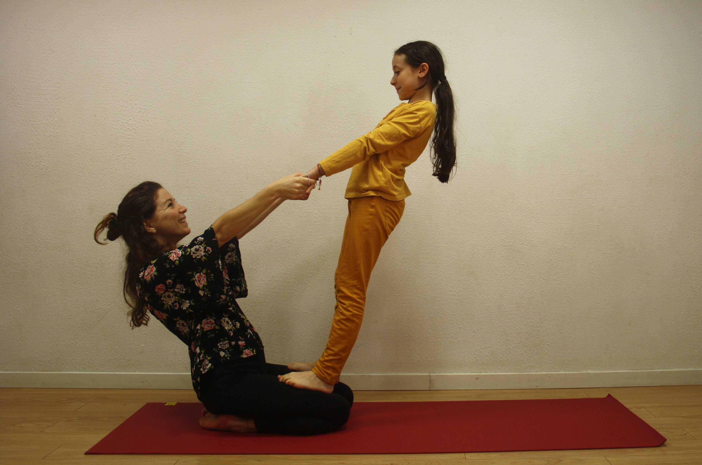
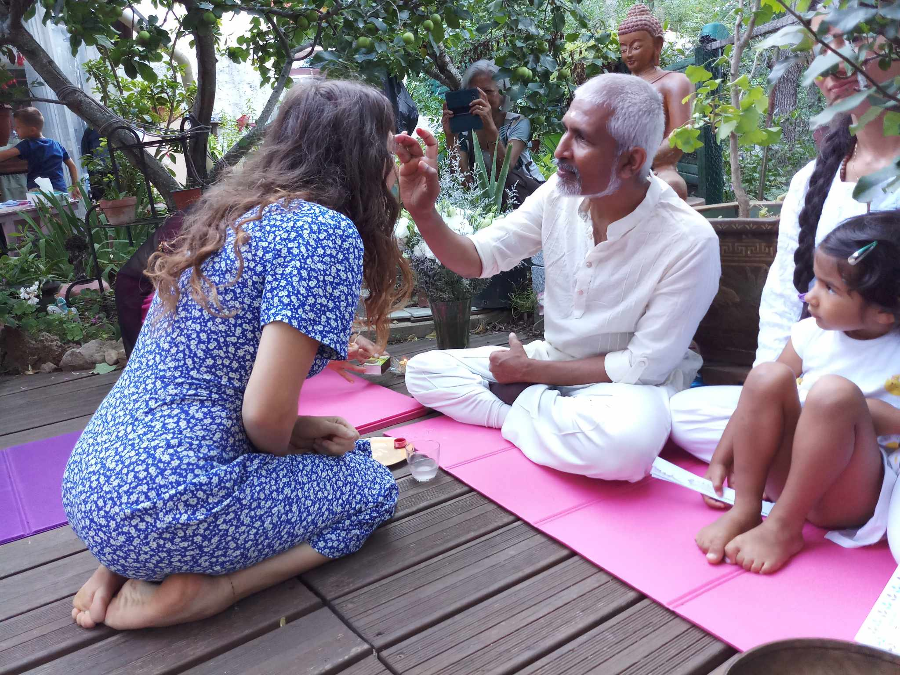

Je m'appelle Gaëlle, j'ai 31 ans et je suis créatrice, Professeure de Yoga et intervenante en Art et Montessori. Créatrice des ateliers de "Etincelle Nomade", je suis ravie de vous accueillir.
Je suis diplômée des beaux-arts de Marseille (DNSEP à L'ESADMM) depuis 2017. Passionnée par la création j'ai continué à expérimenter et à développer mon identité artistique, aujourd'hui je suis créatrice sous le nom de "Gaëlle & Amour".
J'ai ensuite souhaité transmettre cette énergie créatrice aux enfants dans les écoles, centre sociaux, associations (interventions et transmissions artistiques depuis 2012) puis aux adolescents et adultes. Suite à ces moments de partage avec les enfants je me suis intéressée aux pédagogies alternatives. Je me suis formée en tant qu'éducatrice Montessori pour les 3 à 6 ans (École internationale Montessori d'Esclaibes) en 2018. Dans les écoles Montessori j'enseigne la pédagogie Montessori mais également le Yoga enfants et l'Art.
Le Yoga est à la base une pratique personnelle que j'ai commencé à l'âge de 20 ans, adoptée, dès les prémices, à mon quotidien. J'ai souhaité le transmettre un an plus tard aux enfants dans les écoles et associations. Une profession que je maîtrise depuis plus de dix ans. Je me suis formée en 2022 auprès de Pranidhana Yoga (Yoga Alliance) et donne des cours aujourd'hui à tous publics (adultes, enfants, enfant/parent).
Lors de mes interventions en Art et Yoga le public ressent : de la bienveillance, de l'écoute, une énergie positive et un bien-être partagé.